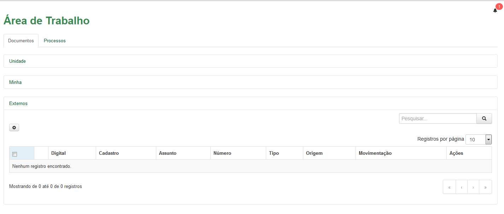

Área Externo
Menu
››
Área de Trabalho
››
Área Externa: Apresenta todos os Documentos/ Processos tramitados externamente, ou seja, aqueles que foram encaminhados para fora do Instituto.

Created with the Personal Edition of HelpNDoc:
Free help authoring tool